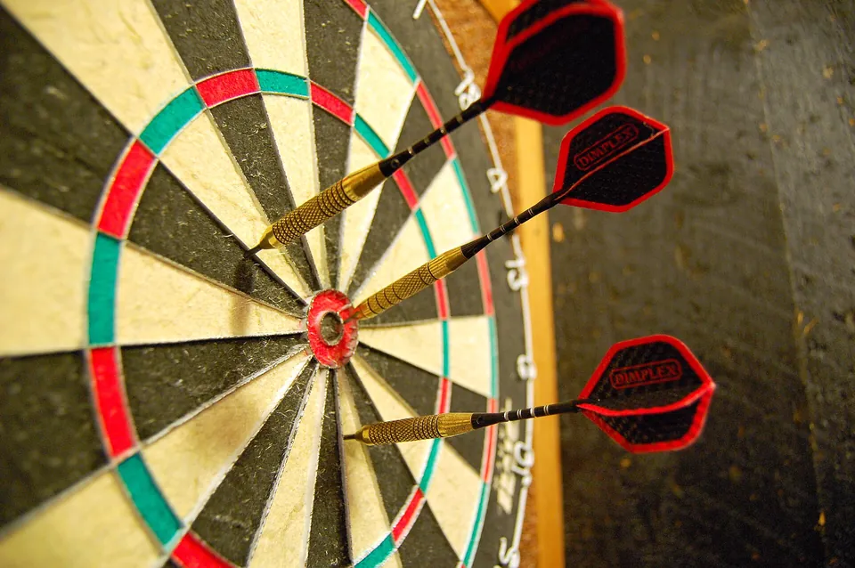
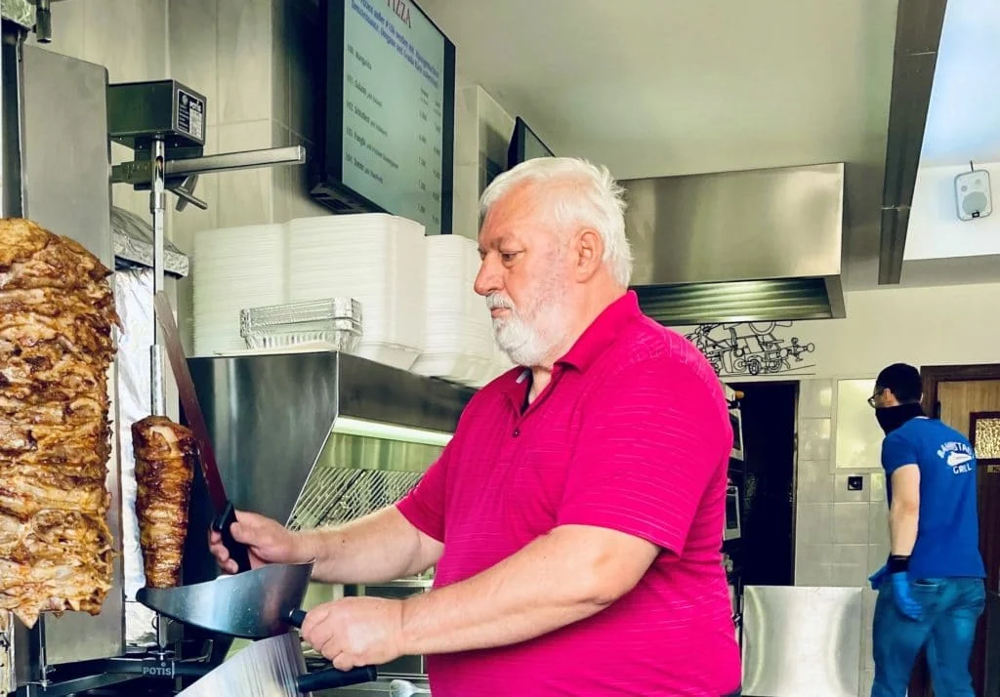
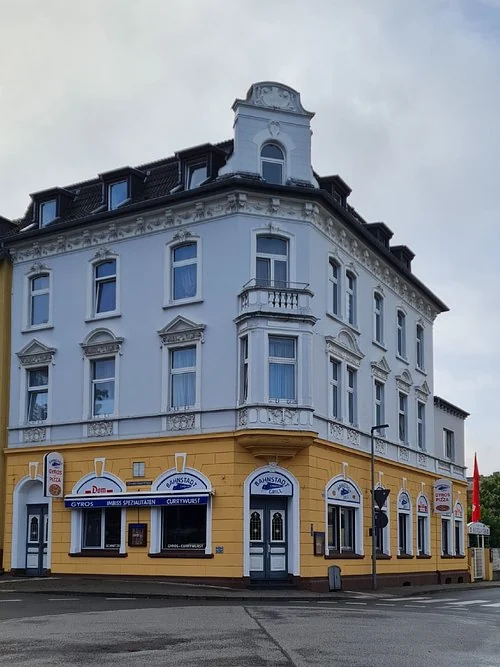
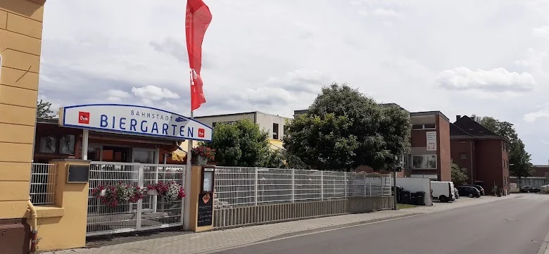
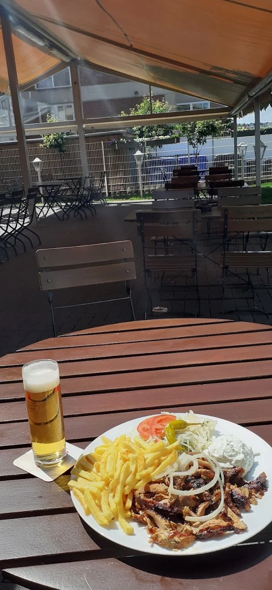
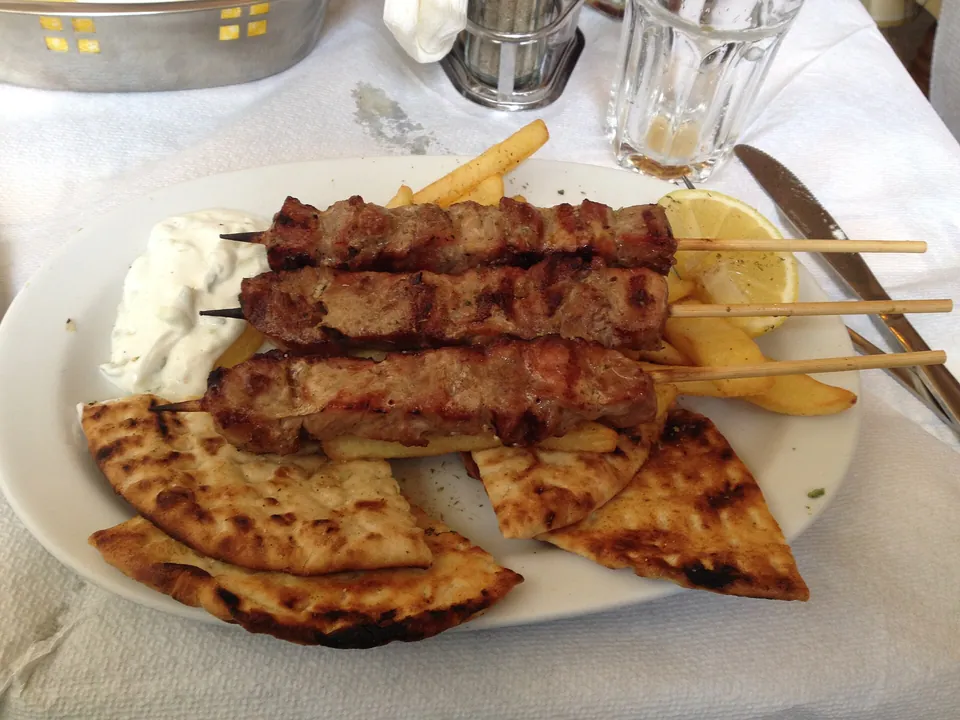

4 Dartscheiben
Eine Runde geht immer. Zwischen zwei Würfen: Currywurst, Gyros, Pizza.
Griechischer Imbiss & Biergarten · Leverkusen-Opladen
„Kali mera, alles klar?!“
Griechischer Grill und Imbiss mit Biergarten, direkt am Bahnhof Opladen. Zum Hieressen, draußen sitzen oder Mitnehmen.


Lützenkirchener Str. 12„Hier gibt es die beste Gyros Pita von Welt!“
Frau Krüger, Stammgast – zitiert im Gastrotipp von „Lust auf Leverkusen“ (Stadtmarketing Leverkusen) · Artikel lesen

Draußen
17–22
Uhr · Montag bis Samstag
Rasen, Sonnendach, Laternen – und ein kühles Kölsch. Draußen gibt es eine eigene Biergarten-Karte.


Der Biergarten erinnert an die Zeit, als nebenan noch das Bahnwerk lief und das Haus „Zur Schwelle“ hieß. Abends sitzt Stavros oft selbst draußen und erzählt eine Bahnstadt-Geschichte.
Biergarten · Mo–Sa 17–22 Uhr
Sagen Sie uns, wann Sie mit wie vielen Leuten kommen. Wir bestätigen Ihre Reservierung telefonisch oder per E-Mail.
Google-Bewertungen
★★★★★
Immer wieder gerne hier, die Küche ist ausgezeichnet und der Chef ist ein echt toller Typ. Die freundliche Bedienung darf man natürlich auch nicht vergessen ✌🏻
★★★★★
Hatten Gyros-Pommes bestellt. Das Fleisch ist sehr lecker und die Pommes sind dünn und knusprig – so wie Pommes sein sollen. Das Tsatsiki war ebenfalls sehr lecker – es schmeckt überall anders, was auf Frische hindeutet. Das Essen wurde uns auch schnell gebracht. Wir kommen gerne wieder.
Waren Sie schon da? Wir freuen uns über Ihre Bewertung.
Bahnstadt-Geschichte
Opladen war eine Eisenbahnerstadt. Gleich nebenan lag das Ausbesserungswerk – und die Gaststätte an der Lützenkirchener hieß passend „Zur Schwelle“.
Das Werk ist Geschichte, auf dem Gelände wächst die Neue Bahnstadt. Aus der Schwelle wurde der Bahnstadt Grill – der Biergarten ist geblieben.
Stavros steht selbst am Drehspieß. Das Gyros ist außen knusprig und innen saftig, Tzatziki und Krautsalat sind hausgemacht – für Stammgäste aus Opladen genauso wie für Pendler vom Bahnhof nebenan.
Montag bis Samstag von 11:30 bis 21:00 Uhr. Sonntag ist Ruhetag. Der Biergarten hat Montag bis Samstag von 17 bis 22 Uhr geöffnet.
An der Lützenkirchener Straße 12 in 51379 Leverkusen-Opladen, am östlichen Ende der Bahnhofsbrücke – vom Bahnhof Opladen sind es nur wenige Minuten zu Fuß. Parkplätze gibt es vor Ort.
Ja. Nutzen Sie das Reservierungsformular auf dieser Seite oder rufen Sie an: 02171 80154. Ohne Reservierung finden Sie meist auch spontan einen Platz.
Ja, alle Gerichte gibt es auch zum Mitnehmen – von der Gyros Pita bis zur Pizza. Am schnellsten geht es, wenn Sie vorher anrufen.
Ja, zum Beispiel die Gemüsefrikadelle im Pita-Brot, vegetarische Pizzen, gefüllte Weinblätter, Salate und hausgemachten Tzatziki.
Nein. Vor den Spielen treffen sich bei uns aber einige Bayer-04-Fans auf ein Gyros und ein kaltes Getränk, bevor es zum Stadion geht.
Besuch
51379 Leverkusen-Opladen · wenige Minuten vom Bahnhof Opladen · Parken vor Ort
| Montag – Samstag | 11:30 – 21:00 |
|---|---|
| Sonntag | Ruhetag |
| Biergarten Mo–Sa | 17:00 – 22:00 |